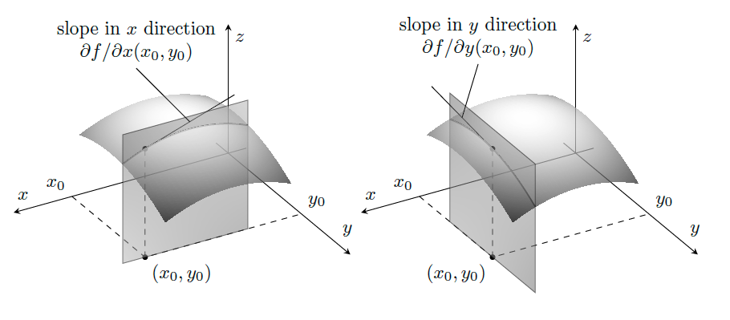
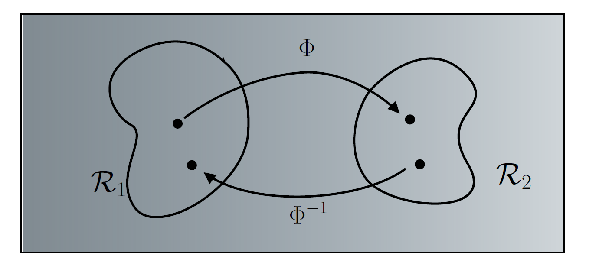
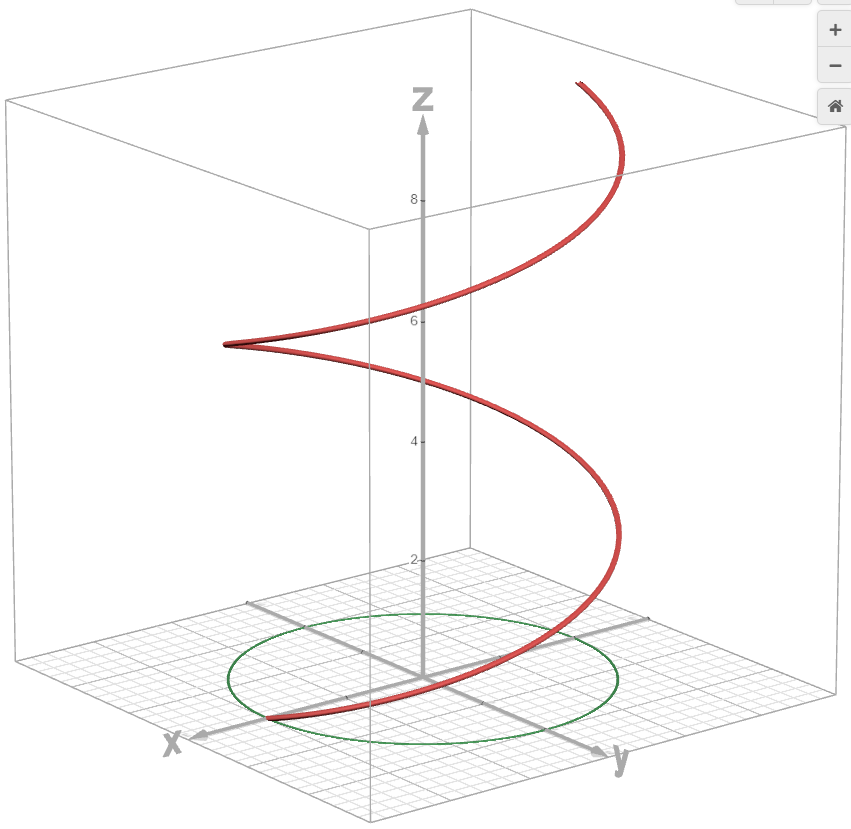
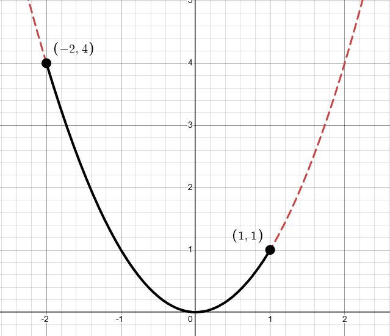
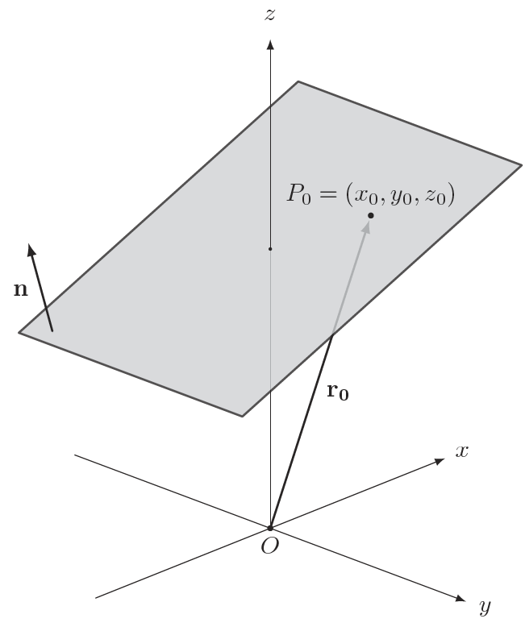
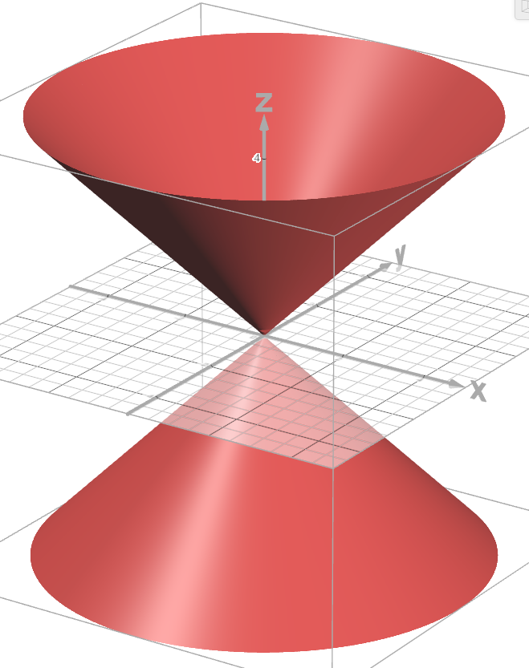

Jonathan Crofts
Nottingham Trent University
We say that the limit of $f(x,y)$ as the point $P(x,y)$ approaches $P_0(x_0, y_0)$ is the number $L$ and write
\[ \lim_{(x,y)\rightarrow (x_0, y_0)} f(x,y) = L, \]if, for every $\epsilon>0$, there exists a $\delta>0$ such that
\[ (x,y)\in\mathcal{N}_\delta(P_0)\setminus P_0 \implies |f(x,y) - L| <\epsilon \]Here, $\mathcal{N}_\delta(P_0)$ denotes a disk in the plane of radius $\delta$
Investigate the limits along rays at the origin of
\[ \begin{align*} f_1(x,y) &= \frac{x^4+y^4}{x^2+y^2}, \qquad (x,y)\neq 0\\ f_2(x,y) &= \frac{x^2-y^2}{x^2+y^2}, \qquad (x,y)\neq 0 \end{align*} \]Consider the rays $~y=x$, $~y=-x$, $~y=0$ and $~x=0$.
\[ \lim_{x\to 0}f_1(x,x) = \lim_{x\to 0} \frac{2x^4}{2x^2} = \lim_{x\to 0}x^2 = 0 \]Analogously, we can show $f_1(x,-x) = f_1(x,0) = f_1(0,y)=0$
The limit would appear to be independent of the path of approach
Considering the same rays for the second function
\[ \begin{align*} \lim_{x\to 0}f_2(x,x) &= \lim_{x\to 0} 0 = 0\\ \lim_{x\to 0}f_2(x,-x) &= \lim_{x\to 0} 0 = 0\\ \lim_{x\to 0}f_2(x,0) &= \lim_{x\to 0} 1 = 1\\ \lim_{x\to 0}f_2(0,y) &= \lim_{x\to 0} -1 = -1 \end{align*} \]The limits depend on the path of approach
We say that $f$ is continuous at $P_0$ if
\[ \lim_{(x,y)\rightarrow (x_0,y_0)}f(x,y) = f(x_0,y_0) \]A function is said to be continuous if it is continuous at each point of its domain.
In the previous example the function $f_1$ can be made continuous for all $(x,y)\in\mathbb{R}^2$
\[ f_3 = \begin{cases}\frac{x^4+y^4}{x^2+y^2}&(x,y)\neq 0\\0&(x,y)=(0, 0)\end{cases} \]We can not extend the function $f_2$ in this manner since its limit at $(0, 0)$ is path dependent
Let $f: \mathbb{R}^2\to\mathbb{R}$. If we hold one variable fixed in $f(x,y)$, say $y=y_0$, then we obtain a function of one variable
\[ g(x) = f(x, y_0). \]The derivative of this function w.r.t. $x$ is just
\[ g'(x) = \lim_{h\to 0}\left(\frac{g(x+h)-g(x)}{h}\right) \] or \[ \color{red}{\boxed{\color{white}{ f_x(x,y_0) = \frac{\partial f}{\partial x} = \lim_{h\to 0}\left(\frac{f(x+h,y_0)-f(x,y_0)}{h}\right) }}} \]The rate of change of the function $f$ above is the partial derivative w.r.t. $x$.
We can write a similar expression for $f_y(x_0, y_0)$
The following schematic illustrates the partial derivatives of a function $f(x,y)$
Find $f_x$ if $\displaystyle f(x,y) = \frac{2y}{y+\cos{x}}$
The following result will be useful moving forward.
If all the second partials are continuous, then $f_{xy}=f_{yx}$
Compute the second order partial derivatives of the function $\displaystyle f(x,y) = x\cos{y}+ye^x$
First derivatives:
\[ \frac{\partial f}{\partial x} = \cos{y}+ye^x, \qquad \frac{\partial f}{\partial y} = -x\sin{y}+e^x \]Second derivatives:
\[ \frac{\partial^2 f}{\partial x^2} = ye^x, \qquad \frac{\partial^2 f}{\partial y^2} = -x\sin{y}+e^x \]Mixed derivatives:
\[ \frac{\partial^2 f}{\partial y\partial x} = -\sin{y} + e^x, \qquad \frac{\partial^2 f}{\partial x\partial y} = -\sin{y} + e^x \]Find $\partial^2 w/\partial x\partial y$ if
\[ w(x,y) = xy + \frac{e^y}{y^2+1} \]The order of differentiation is important here: $\displaystyle w_x=y \implies \color{#00FF00}{\boxed{\color{white}{ w_{yx}=1=w_{xy}}}}$
A transformation of a region $\mathcal{R}_1$ into a region $\mathcal{R}_2$ is a rule that assigns to each point of $\mathcal{R}_1$ a unique image point in $\mathcal{R}_2$
Examples include
In this course transformations will arise as parametrisations of curves or surfaces as above, or due to a change of variables/coordinate system
If $x$ and $y$ are given as continuous functions
\[ x = f(t),\qquad y=g(t) \]over an interval of $t$-values, then the set of points $\displaystyle (x, y) = (f(t), g(t))$ defined by these equations is a curve in the coordinate plane
Using the langauge of transformations, a curve is a mapping (transformation) $\Phi(t):\mathbb{R}\to\mathbb{R}^2$
Here, $\displaystyle\Phi(t) = (f(t), g(t))$
Perhaps the most familiar such example is a circle:
\[ C: [0, 2\pi]\to\mathbb{R}^2, \quad\text{defined by}\quad C(t) = \begin{pmatrix}\cos{t}&\sin{t}\end{pmatrix},\quad t\in[0,2\pi) \]Draw the curve given by the transformation
\[ C(t):\mathbb{R}\to\mathbb{R}^3,\qquad C(t) = 2\cos{t}\mathbf{i}+2\sin{t}\mathbf{j}+t\mathbf{k} \] for $t\in[0, 3\pi]$The graph of $~C(t) = (f(t), g(t), h(t))~$ is that of a helix as shown below
It is a curve in $\mathbb{R}^3$ since the mapping is of the form $C:\mathbb{R}\to\mathbb{R}^3$
If the function $f(x,y)$ can be written explicitly as $y = f(x)$ then we can parametrise the curve given by the graph of $y=f(x)$ as follows
\[ \Phi(t) = (t, f(t)), \qquad t\in[a,b] \]A particle moves along the parabolic path given by the equation $y=x^2$. Its journey begins at the point $(−2, 4)$ and ends at the point $(1,1)$. Find a parametric equation for the particle's displacement along this path.
The parametrisation is
\[ C(t) = (t, t^2) \]with $t\in[-2, 1]$
Just as with curves, we can represent surfaces in a number of ways
\[ \color{red}{\boxed{\color{white}{ \begin{align*} &\text{Explicit form:}\qquad &z=f(x,y)\\ &\text{Implict form:} &F(x,y,z)=0\\ &\text{Parametric form:} &\mathbf{r}(s,t)=(f(s,t), g(s,t), h(s,t))\\ \end{align*}}}} \]Aas we can see from the above a surface is a mapping from $\mathbb{R}^2\to\mathbb{R}^n$
Typically $n=3$, i.e. we consider surfaces embedded in 3-dimensional space
The simplest example of a surface is a plane in $\mathbb{R}^3$, which is defined by the Cartesian equation
\[ ax+by+cz = d \] for constants $a, b, c, d\in\mathbb{R}$.What is the parametric equation of a plane?
We can write a parametric equation for a plane if we have a point on the plane and two non-parallel vectors $\mathbf{u}, \mathbf{v}$ that lie in the plane as follows
\[ \color{red}{\boxed{\color{white}{ T(s,t) = \mathbf{r} = \mathbf{r}_0 + s\mathbf{u} + t\mathbf{v}}}} \]Here, $\mathbf{r}_0$ is the position vector of the point in the plane and
\[\mathbf{r}(s,t) = (x(s,t), y(s,t), z(s,t)))\]We can relate this to our Cartesian representation:
\[ \mathbf{n}\cdot\mathbf{r} = \mathbf{n}\cdot\left(\mathbf{r}_0 + s\mathbf{u} + t\mathbf{v}\right) = a \] or \[ n_1x+n_2y+n_3z = a \]for $a\in\mathbb{R}$, $\mathbf{n}$ a vector normal to the plane and $\mathbf{r}=\begin{pmatrix}x&y&z\end{pmatrix}$ a general point on the plane.
Sketch the surface $z^2=x^2+y^2$ and determine a parametric form of the equation
Here, cylindrical coordinates provides everything we need
\[ x=r\cos\theta,\quad y=r\sin\theta, \quad z = \sqrt{x^2+y^2} = r \]So our equation becomes
\[ \mathbf{r}(r, \theta) = (r\cos\theta, r\sin\theta, r) \]It should be clear from this that the surface is a cone
(For fixed height $r$ we have a circle of radius $r$ parallel to the $xy$-plane)
Actually this is only half the story ...
The Jacobian matrix of a transformation $T$ is the matrix of partial derivatives of $T(u,v)$ and denoted $\displaystyle J = DT(u,v) = \partial T(u,v)/\partial(u,v)$
If
\[ T(u,v) = (f(u,v), g(u,v)) \]then
\[ \color{red}{\boxed{\color{white}{ J = DT = \begin{pmatrix}f_u&g_u\\f_v&g_v\end{pmatrix}}}} \]A fundamental property of the Jacobian determinant is that it represents the local scaling factor for area when a region undergoes a transformation
That is, if $\mathcal{U}$ is a small square that is mapped to $\mathcal{V}$ under $T$, then
\[ \color{#00FF00}{\boxed{\color{white}{ \mathrm{area}(\mathcal{V}) = |J|\mathrm{area}(\mathcal{U})}}} \]The square of a complex number $u+iv$
\[ (u+iv)^2 = u^2-v^2 +i(2uv) \]can be considered as a mapping of the complex plane as follows
\[ T(u,v) = (u^2-v^2, 2uv) \]Its Jacobian is given by
\[ J = \begin{pmatrix} 2u&-2v\\ 2v&2u \end{pmatrix} \] and its determinant \[ |J| = 4(u^2+v^2) \]Compute the Jacobian matrix and determinant of the map
\[ T(u,v) = (\cos(\theta)u+\sin(\theta)v, -\sin(\theta)u+\cos(\theta)v) \]where, $\theta\in[0, 2\pi]$ is fixed.
What does this tell us about the transformation?
Does it make sense?
Yes, the transformation is a rotation by $\theta$ about the origin and so areas are preserved